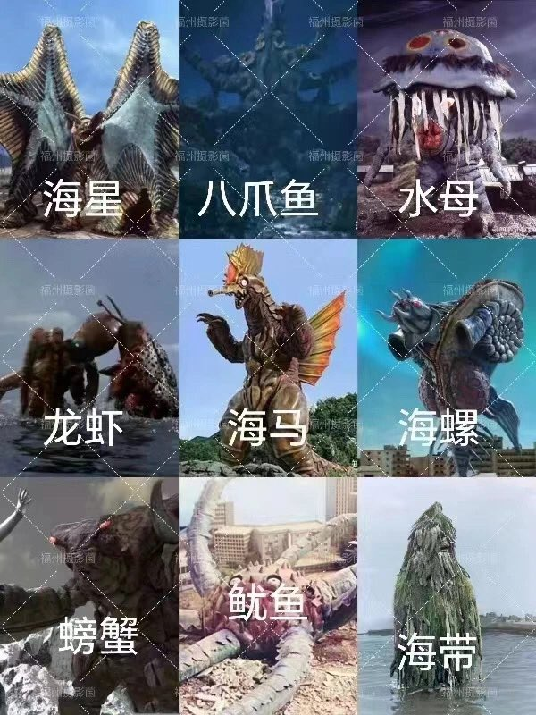
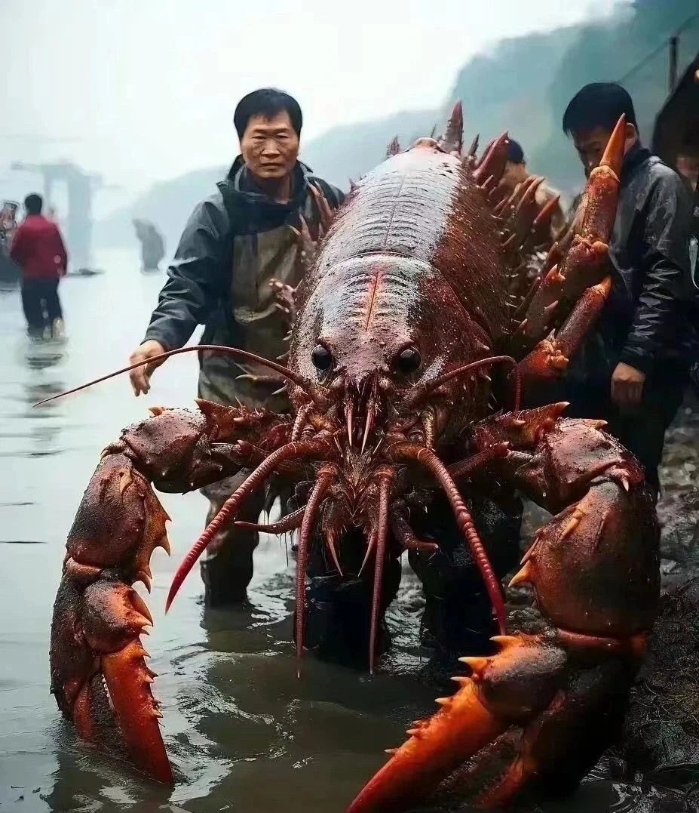
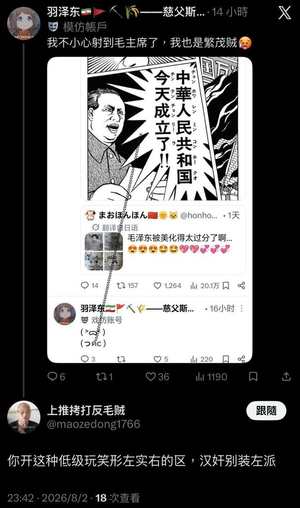
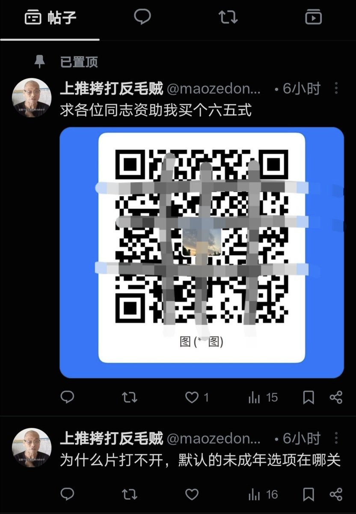
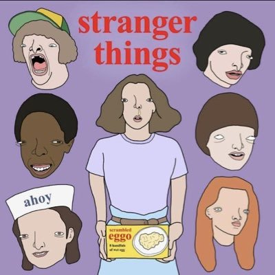

𝓶𝓸𝓻𝓽𝓲𝓼
@0Yowlry
@NmsleseResearch





福滿多多
@fumanduoduo
Fucking Japan！Fucking Japanese！
台独死全家，港独死全家，
精日死全家！
#Japan https://t.co/ULHAaoPutf
🐻老大🔬兔友研究院Bot
@NmsleseResearch
晚安 https://t.co/oFHVKQq56P